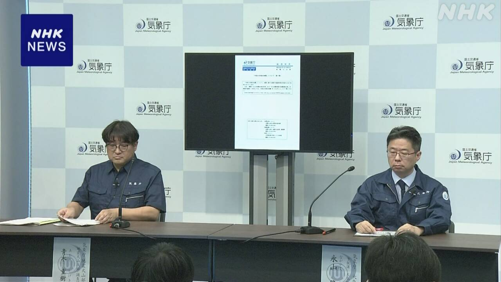
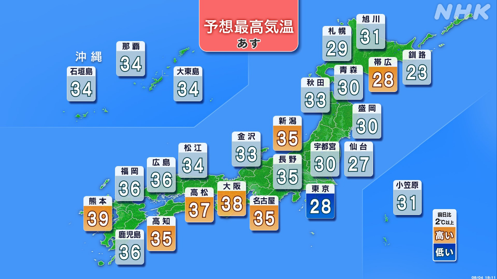
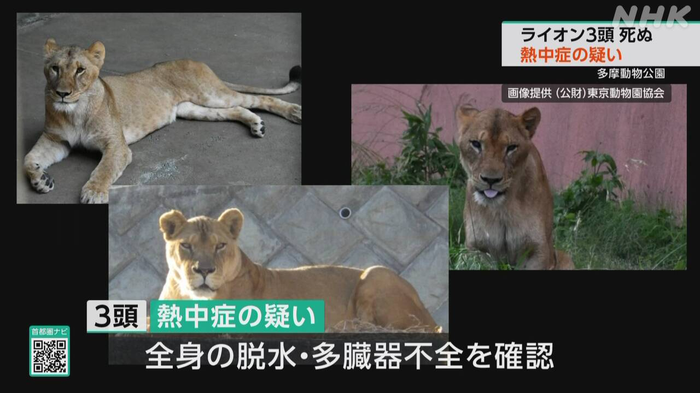

最新ニュース
1️⃣ 熊本の地震 「このあとも1週間ぐらいは強い地震に気をつけて」

熊本県で起こった震度7の地震から、4日で1週間です。
熊本県によると、38人が亡くなりました。この中には、地震と関係があるかまだはっきりわかっていない人も1人います。車の中に避難していて亡くなった人もいます。
今も7600人以上が避難していて、家に戻ることができません。
地震もまだ続いています。体に感じた地震は、4日の午後3時で521回になりました。
気象庁は「このあとも1週間ぐらいは震度5強以上の強い地震があるかもしれません。十分気をつけてください」と話しています。
2️⃣ 4万4000以上の家や建物で水道が止まっている
熊本県では、4万4000以上の家や建物で水道が止まっています。
このため、いろいろな場所に水をもらうことができる給水所をつくっています。
八代市の給水所には、4日も午前中からたくさんの人が集まりました。そして、ペットボトルなどに水を入れていました。
近くに住む女性は「この水で手をきれいに洗って、病気にならないように気をつけたいです」と話していました。別の男性は「毎日、家と給水所を何度も行ったり来たりしています。早く水道の水が出てほしいです」と話していました。
3️⃣ 梅雨が終わった 西日本などで厳しい暑さが続く

気象庁は4日、北陸地方と東北地方の梅雨が終わったようだと言いました。
北海道は梅雨がないので、これで日本の全部の場所で梅雨が終わりました。
九州など西日本で、4日もとても暑くなりました。広島県と長崎県では、38℃以上になったところがありました。
気象庁によると、5日も九州などで気温が上がって熊本市では39℃の危険な暑さになりそうです。
できるだけ涼しいところにいてください。水や塩分もとって、熱中症にならないようにしてください。
南の海では、台風13号が小笠原諸島の近くを進んでいます。小笠原諸島では高い波や風に十分に気をつけてください。
4️⃣ 東京の動物園でライオン3頭が死んだ 熱中症か

東京の多摩動物公園には、たくさんのライオンがいます。
見る人は特別なバスでライオンの近くに行くことができて、人気があります。
しかし、最近、3頭のライオンが続けて死にました。3頭は先月からあまりエサを食べなくなったり、立つことができなくなったりしていました。
動物園は、厳しい暑さで熱中症になったのではないかと言っています。
ほかにも元気のないライオンがいるため、動物園は今、ライオンを見せることをやめています。
動物園に来た女の子は「ライオンがいなくてさみしいです。早く元気になってほしいです」と話しました。
- 〜から
- 〜によると
- 〜ている / 〜でいる
- 〜がある / 〜がいる
- 〜中
- 〜ことができる
- 〜こと
- 〜以上
- 〜になる
- 〜後 / 〜あと
- 〜かもしれない / 〜かもしれません
- 〜くらい / 〜ぐらい
- 〜てください / 〜でください
- 〜ところ
- 〜ため
- 〜など
- 〜ならない
- 〜ように
- 〜たり〜たりする
- 〜ようだ / 〜みたいだ
- 〜ので
- 〜ても / 〜でも
- 〜そうだ
- 〜だけ
- 〜ようにする
- 〜ではないか / 〜じゃないか
- 〜なくて
vebaev.github.io
Generated: 2026-08-04 13:03:21 UTC